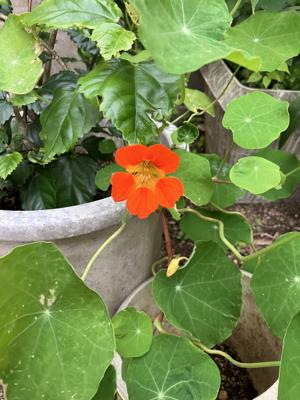

うるがいの話 ある日
最新: 年賀はがきの副割【うるがいの話 ある日】とは 一日だけのプログです
『うるがいの話』の最新一日だけのプログで、通信料が少なく経済的だ。カニの画像をクリックすると全ての日付が載る『うるがいの話』サイトを表示します
|
|
【うるがいの話】 うるがい(ｳﾙｶﾞｲ urugai)とは、『もずくがに』の名前でとても大きくなります。 |
|---|---|
|
|
【カミマヤーの話】 猫のことを方言でマヤーといいます。カミマヤー（kamimayaa）とは、神の猫のことです。 |
|
【たながぁの音楽】 たながぁ（ﾀﾅｶﾞｰ tanagaa）とは手長えびのことで、何種類かあり大きいのは車 エビぐらいになります。 |

|
【ぶながぁの話】 ぶながぁ(ﾌﾞﾅｶﾞｰ bunagaa)とは、赤い髪の毛、赤い身体、そして身長は１ｍ２０ｃｍ ぐらい、川の蟹を食べているの目撃された。場所は沖縄県国頭郡大宜味村のと ある村僕の隣近所に住んでいる爺さんから、聞いた話です。 |
|
|
【ギーマの話】 ギーマ(giima)とは、山原の里山に咲くスズランに似た、 花を付けます。実は食べられます、 気が付くと口の周りが紫になっています。 |
2024年01月07日 (日）年賀はがきの副割
15:09

このチラシにある室内灯（税込み３，４８０円）、年賀はがきの割引こなりま
すか？と、店員さんに話すと『チラシに載っている製品は対象外です』、ん、
去年も同じようなことを経験しました、チラシのどこに対象外って書いてあり
ますか、と『ここです』ととてもとても小さい文字で、一部副割対象外があり
ますと書いてあって店頭に製品の横に『副割対象外』とビラが貼っていた。ん
～、ここまでだ。でもプリンターのインク（税抜き￥８，１４０円）は対象だ
ろうとハガキをもってレジへ精算にいく。年賀はがきの副割小吉（１０％引）
できますかと話すと、エディオンカードを持っていますか、会員さんはインク
等の消耗品は１０％引きなので、とただし室内燈は１０％引きで清算を行おう
とする。チョットまって下さい、チラシに載っている室内灯は先ほど店員さん
から対象外と聞きました。店員さんは、隣にいた店員さんに確認すると副割対
象外ですと・・・。で、結局年賀はがきの副割は適用せず、２年連続ではめら
れた私です。ヨメに話すと、去年１月５日の食器洗い機器（￥８８、１１０円
）も対象外と言われたけど、納得できないとプンプン怒っていた。来年は注意
しよう。なお、小吉のハガキは、すこしぐしゃぐしゃになっていた。マンショ
ンに届いた２００３年に亡くなったお義父さんにとある住宅関係の会社から届
いて、ヨメが捨てようと握りつぶしたものの、年賀はがきの割引があることを
思いだし家に持ってきたと答えた。
１４時５１分 ビットコインの総資産 ￥１８、４４５（↑１５７）